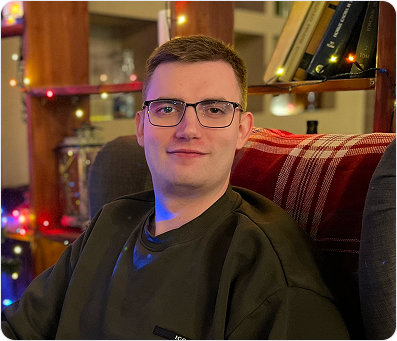

<section class="about-me">
  <div class="container about-me__container">
    <div class="about-me__left">
      <h2 class="about-me__title title-reset">
        Создаю <span>сайты, которые работают</span> на вас
      </h2>
      <p class="about-me__descr descr-reset">
        Занимаюсь полным циклом разработки сайтов на 1С-Битрикс.
        От прототипирования и дизайна до разработки фронтенда
        и бэкенда
      </p>
      <p class="about-me__descr descr-reset">
        Опыт работы более 8 лет, 5 лет из них работал в веб-студии
        по разработке сайтов
      </p>
      <p class="about-me__descr descr-reset">
        Разрабатывал проекты различной сложности, от лендингов
        до высоконагруженных корпоративных порталов со своим API
      </p>
    </div>
    <div class="about-me__right">
      <picture>
        <source media="(max-width: 520px)" srcset="../img/about-me-1920.png">
        <source media="(max-width: 767px)" srcset="../img/about-me-767.png">
        <source media="(max-width: 1279px)" srcset="../img/about-me-1279.png">
        
      </picture>
    </div>
  </div>
</section>